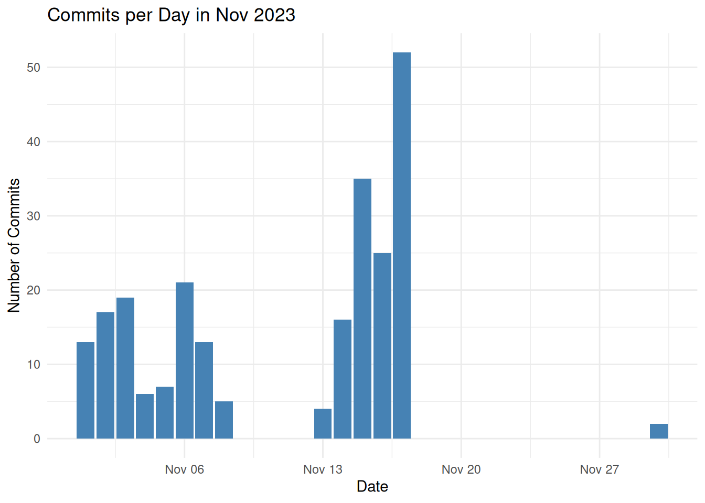
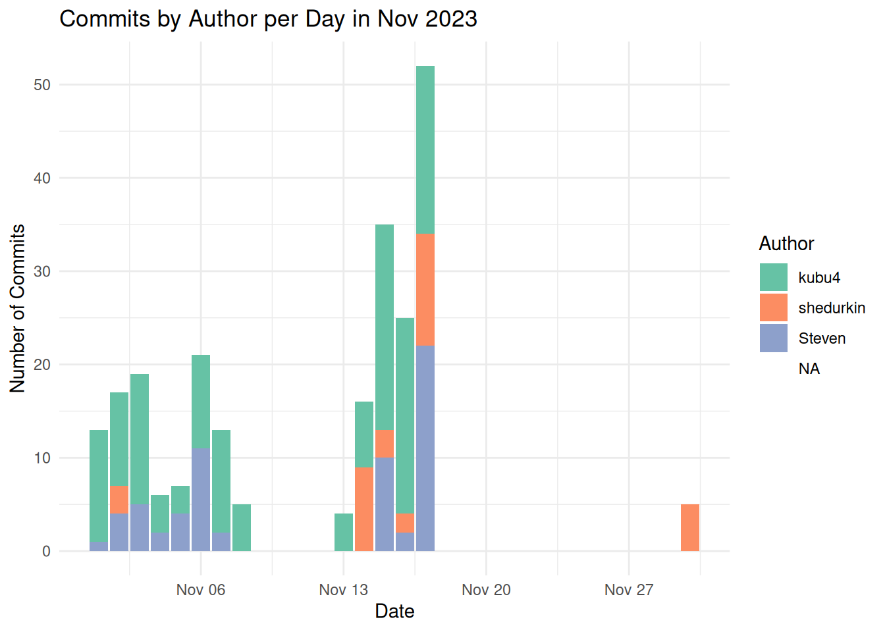

Attaching package: 'dplyr'The following objects are masked from 'package:stats':
filter, lagThe following objects are masked from 'package:base':
intersect, setdiff, setequal, unionSam White
November 30, 2023
For today’s lab meeting, Steven tasked us with the following on Wednesday:
For lab meeting Thursday the topic is “Plots”. Before the meeting make sure to create a notebook post where you show-off a plot of something you did in November, including showing the code used to generate the plot. :bar_chart: - Drop the url to the notebook post below.
So, drawing a blank on what to plot, I opted to visualize commit history for the Coral E5 deep dive repo (GitHub repo).
Let’s start with just trying to plot commits per day.
Attaching package: 'dplyr'The following objects are masked from 'package:stats':
filter, lagThe following objects are masked from 'package:base':
intersect, setdiff, setequal, unionsystem()git_command <- paste("git --git-dir=",
repo_path, ".git log --pretty=format:%ad --date=short --after=",
start_date,
" --before=",
end_date,
" --all",
sep="")
print(git_command)[1] "git --git-dir=/home/sam/gitrepos/deep-dive/.git log --pretty=format:%ad --date=short --after=2023-11-01 --before=2023-11-30 --all"This will create a two-column dataframe (Date, Commits) and replace dates with 0 commits (NAs) with 0.
'table' int [1:14(1d)] 8 17 19 6 7 21 13 5 4 16 ...
- attr(*, "dimnames")=List of 1
..$ commit_dates: chr [1:14] "2023-11-01" "2023-11-02" "2023-11-03" "2023-11-04" ...all_days <- merge(
all_days,
data.frame(
Date = as.Date(
names(commit_table)
),
Commits = as.numeric(
commit_table)
),
all.x = TRUE,
by = "Date")
# Assigns value of `0` to all NAs
all_days$Commits[is.na(all_days$Commits)] <- 0
head(all_days) Date Commits
1 2023-11-01 8
2 2023-11-02 17
3 2023-11-03 19
4 2023-11-04 6
5 2023-11-05 7
6 2023-11-06 21ggplot(all_days, aes(x = Date, y = Commits)) +
geom_bar(stat = "identity", fill = "steelblue") +
labs(title = "Commits per Day in Nov 2023", x = "Date", y = "Number of Commits") +
theme_minimal()
Now, let’s try to look at commits per day by author…
This adds author to format output
commit_info_split <- strsplit(commit_info, " ")
commit_dates <- as.Date(sapply(commit_info_split, "[[", 1))
commit_authors <- sapply(commit_info_split, "[[", 2)
str(commit_dates) Date[1:773], format: "2024-09-23" "2024-09-23" "2024-09-23" "2024-09-23" "2024-09-22" ... chr [1:773] "Jill" "Jill" "Jill" "Jill" "Jill" "Jill" "Jill" "Jill" "Jill" ...# Create a data frame with commit information
commit_data <- data.frame(Date = commit_dates, Author = commit_authors)
head(commit_data) Date Author
1 2024-09-23 Jill
2 2024-09-23 Jill
3 2024-09-23 Jill
4 2024-09-23 Jill
5 2024-09-22 Jill
6 2024-09-17 Jill'data.frame': 773 obs. of 2 variables:
$ Date : Date, format: "2024-09-23" "2024-09-23" ...
$ Author: chr "Jill" "Jill" "Jill" "Jill" ...`summarise()` has grouped output by 'Date'. You can override using the
`.groups` argument.gropd_df [45 × 3] (S3: grouped_df/tbl_df/tbl/data.frame)
$ Date : Date[1:45], format: "2023-11-01" "2023-11-01" ...
$ Author : chr [1:45] "Steven" "kubu4" "Steven" "kubu4" ...
$ Commits: int [1:45] 1 12 4 10 3 5 14 2 4 4 ...
- attr(*, "groups")= tibble [30 × 2] (S3: tbl_df/tbl/data.frame)
..$ Date : Date[1:30], format: "2023-11-01" "2023-11-02" ...
..$ .rows: list<int> [1:30]
.. ..$ : int [1:2] 1 2
.. ..$ : int [1:3] 3 4 5
.. ..$ : int [1:2] 6 7
.. ..$ : int [1:2] 8 9
.. ..$ : int [1:2] 10 11
.. ..$ : int [1:2] 12 13
.. ..$ : int [1:2] 14 15
.. ..$ : int 16
.. ..$ : int 17
.. ..$ : int 18
.. ..$ : int 19
.. ..$ : int 20
.. ..$ : int 21
.. ..$ : int [1:2] 22 23
.. ..$ : int [1:3] 24 25 26
.. ..$ : int [1:3] 27 28 29
.. ..$ : int [1:3] 30 31 32
.. ..$ : int 33
.. ..$ : int 34
.. ..$ : int 35
.. ..$ : int 36
.. ..$ : int 37
.. ..$ : int 38
.. ..$ : int 39
.. ..$ : int 40
.. ..$ : int 41
.. ..$ : int 42
.. ..$ : int 43
.. ..$ : int 44
.. ..$ : int 45
.. ..@ ptype: int(0)
..- attr(*, ".drop")= logi TRUEggplot(all_days, aes(x = Date, y = Commits, fill = Author)) +
geom_bar(stat = "identity") +
labs(title = "Commits by Author per Day in Nov 2023", x = "Date", y = "Number of Commits") +
theme_minimal() +
scale_fill_brewer(palette = "Set2")